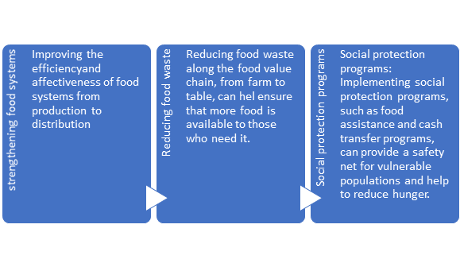
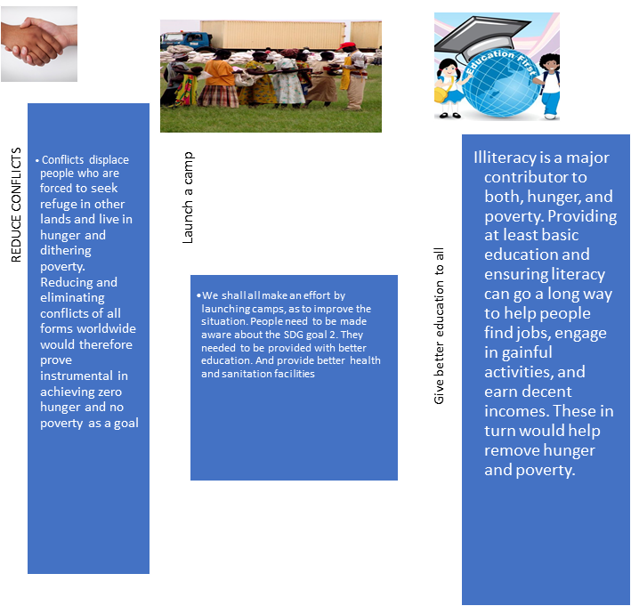
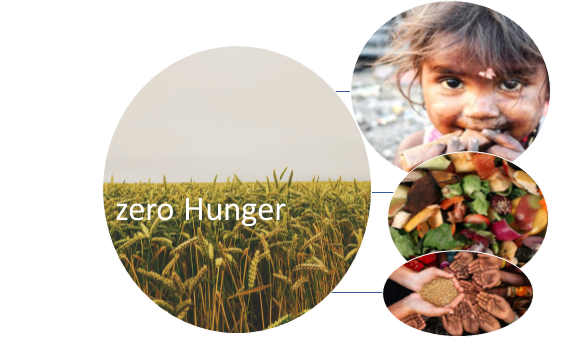
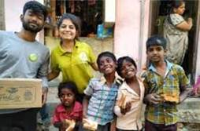
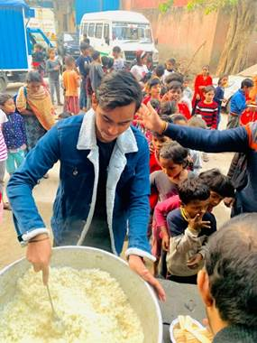
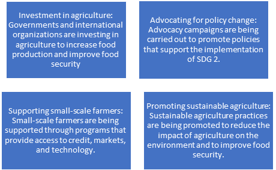
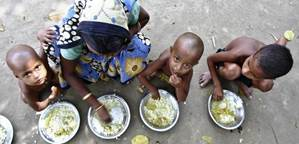
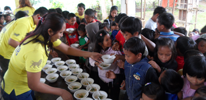
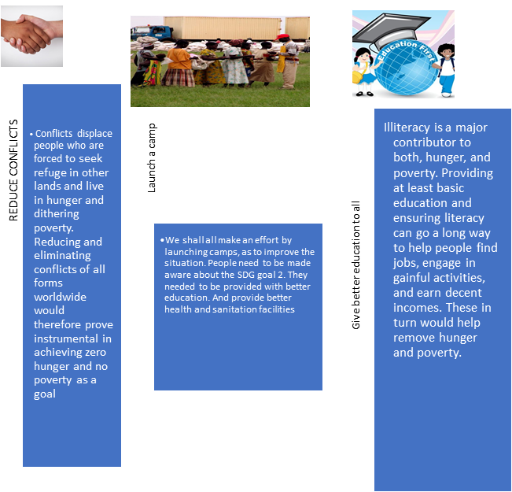

Food has the unique ability to bring people together, regardless of their cultural, ethnic, or socioeconomic background. Food has the power to break down cultural and linguistic barriers and create a sense of unity and understanding. Regardless of where you come from or what language you speak, everyone can appreciate the taste and flavours of good food.
MISSION
Ending hunger is one of the most important global challenges of our time. There are several reasons for this:
There is no single solution to ending hunger, but there are various approaches : 


SDG 2: ZERO HUNGER
· Zero Hunger aims to end hunger, achieve food security and improved nutrition, and promote sustainable agriculture.
· It seeks to ensure that all people, especially those who are most vulnerable, have access to sufficient, safe and nutritious food to meet their dietary needs and food preferences for an active and healthy life.
· The target of this goal is to end hunger and all forms of malnutrition by 2030.
· To achieve this, efforts must be made to increase agricultural productivity and incomes of small-scale food producers, particularly women, and enhance access to food, especially in rural areas.
Various steps are being taken by governments, organizations, and individuals around the world. Some of these include:
.
Though steps are being taken to achieve SDG 2, there is still a long way to go to achieve this goal. It will require sincere efforts from all sectors of society to ensure that everyone has access to sufficient and nutritious food.
CHALLENGES
Main challenges faced with food security in India:
1. Poverty: Number of people living below poverty line (BPL) has increased by 27.5% according to the Census report, which need to be overcome in order to attain the desired food security in the country.
As India is still a developing nation, poverty is one of the most prominent issues facing the country. The lack of money makes it so hard that many cannot get enough of the nutritious food they need.
AWARENESS
Food is about bringing something into the body. And to eat the same food suggests that we are both willing to bring the same thing into our bodies. People just feel closer to people who are eating the same food as they do. And then trust, cooperation, these are just consequences of feeling close to someone.”
Objective
1. SDG Goal number 2: ZERO HUNGER
2. The Zero Hunger SDG focuses on finding sustainable solutions to stop world hunger. The goals of the Zero Hunger initiative are to end hunger and make sure that enough nutritious foods are available to people by 2030.
3. Measures taken by UN and how people are aware till now-:
4. Ensuring sustainable food production systems; increasing investment in agriculture; Correcting and preventing trade restrictions and distortions in world agricultural markets; Adopting measures to ensure the proper functioning of food commodity markets.
5. There are five hunger-fighting initiatives taken by the government including National Nutrition Mission (NNM), National Food Security Mission, Zero Hunger Programme, Eat Right India Movement, and efforts towards Food Fortification.
6. According to UNO -India, there are 195 million undernourished people in India, which is a quarter of the world’s hunger burden. Also, 43% of children in India are chronically undernourished. India ranks 68 out of 113 major countries in terms of food security index 2022.
7. So, above data shows that in India people are still unaware about the food they eat and then need of food for their nutrition.
MEASURES
Every day too many people in countries across the globe struggle to feed their children a simple, nutritious meal. When we discuss about achieving the Sustainable Development Goals (SDGs), we are talking about transforming the lives of those impoverished families at the bottom of the economic pyramid.
Here are some numbers:
1. To provide food to all the needy and deprived beggars, religious places like Gurudwaras and Mandirs are organizing langars and bhandaras. These are community kitchens, which serves meals to all free of charge, regardless of religion, caste, gender, economic status, or ethnicity. We need to launch these types of communities to provide food and move a step towards zero hunger.
2. Poor sanitation, leading to diarrhoea, is another major cause of child wasting and stunting. At the time of the last National family health survey, almost 40% of households were still practicing open defecation.
3. Access to affordable, nutritious food for everyone – all 7 billion of us – is vital. We must innovate and invest in making our supply chains more efficient by developing sustainable durable markets. To support these markets, we must also improve rural infrastructure, particularly roads, storage and electrification, ensuring farmers’ ability to reach a wider consumer base.
In developed countries, food is often wasted on the plate, while in developing countries it is lost during production, as crops go unused or unprocessed because of poor storage or because the farmers cannot get their goods to market. There are many Indian curries which are built in an instant. Like “Gatte Ki Sabzi”. We can provide these curries and they will improve storage.
TO LET PEOPLE KNOW
According to Action against Hunger, in 2021, hunger affects almost 10% of the global population. Furthermore, just between 2019 and 2020, the number of people suffering from undernourishment globally rose by 161 million. To prevent the dire consequences of not reaching Sustainable Development Goal 2, individuals need to follow several steps for individuals to support this goal:
Zero hunger cannot be achieved by any one person, group, or organization. Doing a collaborative work will help in opening the doors of our success.
